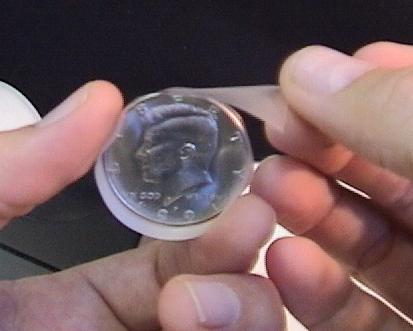
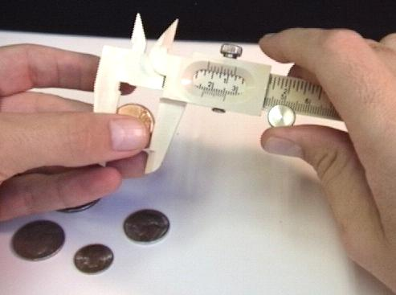

|
|

|
CUPOL: Determining p
|
CUPOL Home
  
What do these icons mean?
Background
It is well known that the circumference, C, of any circle with diameter,
d, may be determined by the formula,
The value for p may be determined experimentally by
plotting the circumference of several circles versus their diameter. Recall that
the general equation of any straight line is given by
where m is the slope and b is the y-intercept of the line. If the line
passes through the origin, then b = 0, and Equation 2 becomes
Equation 1 has the identical form of Equation 3.
Therefore plotting several circles'
circumferences versus their diameters will yield a slope that is equivalent to
p. Notice that the y-intercept should be identically zero. When
calculating the percent error, assume the value for
p to be 3.14159.
Apparatus
- Coins (one each: penny, nickel, dime, quarter and half dollar)
- Transparent sticky tape
- Meter stick
- Vernier caliper
- Graph paper
- Straight edge
Procedure
Figure 1.

[Click on image to enlarge it.]
Determine the circumference of the coins.
To measure the circumference of the penny, wrap a piece of tape around the
outer edge of the coin. Carefully place a mark on the tape
where it overlaps itself.
With a meter stick measure the length of the tape.
Record the measurement of the penny's circumference in your
notebook. (Use the data table as a reference.)
Repeat these steps for each coin.
View the following video clips to measure and record each coin's
circumference.
Measure the penny's circumference. [1:14, 13.8 Mb]
Measure the nickel's circumference. [0:41, 5.6 Mb]
Measure the dime's circumference. [0:41, 7.6 Mb]
Measure the quarter's circumference. [0:39, 7.3 Mb]
Measure the half dollar's circumference. [0:35, 6.2 Mb]
Figure 2.

[Click on image to enlarge it.]
Determine the diameter of the coins.
Use a vernier caliper to measure the diameter of the
penny. Record the measurement of the penny's diameter in your
notebook. Repeat for each coin.
View the following video clips to measure and record
each coin's diameter:
Measure the penny's diameter. [0:28, 5.4 Mb]
Measure the nickel's diameter. [0:31, 5.8 Mb]
Measure the dime's diameter. [0:30, 5.7 Mb]
Measure the quarter's diameter. [0:30, 5.8 Mb]
Measure the half dollar's diameter. [0:31, 6.0 Mb]
Create the graph.
- If you are creating the graph by hand you may wish to view
our graphing
tutorial.
- If you are using Excel to store the data and make the graph, you may want to view our
Excel tutorial.
From your graph, determine the equation of the line based on Equation 1.
Calculate the error.
- Compare your experimental value for p
with the accepted value of 3.14159 by calculating the
percent error
between the two values.
- The careful student should be able to achieve a percent error as
low as 0.6%!
Data
| Coin |
Circumference
(cm) |
Diameter
(cm) |
| Penny |
|
|
| Nickel |
|
|
| Dime |
|
|
| Quarter |
|
|
| Half Dollar |
|
|
Questions
- List the sources of error in this experiment.
- If we had used string, rather than sticky tape, to determine the coins'
circumferences, how would the results differ?
- What does the graph's y-intercept represent? Was the y-intercept close to
zero? Is this what you expected?
- If you were to measure the diameter of a button to be 2.28 cm, describe how
you would use your graph to determine the button's circumference.
Determine the button's circumference using your graph. What is the value of
the circumference using the formula C = p d?
- The density, r, of a solid is found by
dividing the object's mass by its volume, or,
r = m/V. If the masses and volumes of
several objects are given and you are told that each object is made from
the same material, describe how to construct a graph to determine the density
of this material. What is plotted along each axis? Sketch what the graph
should look like. What are the units of the slope?
(Hint: Algebraically rearrange the density formula to make it take the form
y = mx + b.)
- The area of a circle with radius, r, is given by the formula
A = p r2.
Given the area and radius of several circles, describe how you would construct a
graph to determine the value for p.
What is plotted along each axis? Sketch what the graph should look like.
What are the units of the slope? What should the y-intercept be?
(Hint: This graph is not a parabola.)
If you have a question or comment, send an e-mail to Lab Coordinator:Jerry Hester.
CUPOL Home
|
|